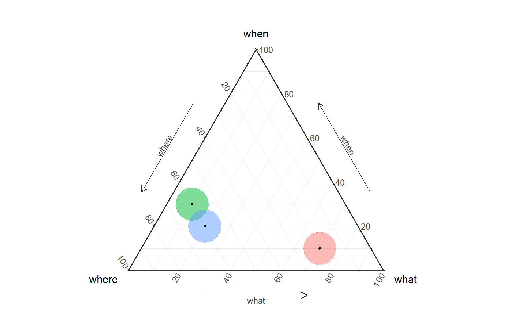
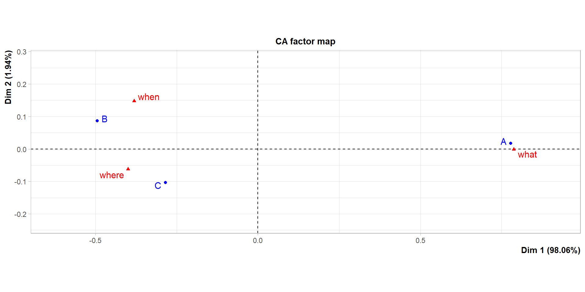
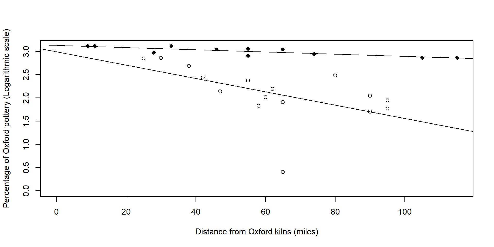

Statistics in Archaeology
Introduction

Grémy et Salmon, 1967
“Le but de la statistique est d’étudier un certain nombre d’objets de même nature, mais qui présentent des caractéristiques variables susceptibles de mesure ou de classement”

Joseph Staline, 1953
“Смерть одного человека — трагедия, смерть миллионов — статистика”

Winston Churchill, 1941
“the only statistics you can trust are the ones you have falsified yourself”
Historiography of Archaeology 1/2
| Start | Method | Description |
|---|---|---|
| 1850s | Prehistory | evolution, geology, anthropology |
| 1950s | Culture-Historical | similarities, typology, chronology |
| 1960s | New archaeology | chain operative, statistics, chronology (C14) |
| 1980s | Post-processual | dissimilarities, cultural relativism |
| 2020s | Tool-driven | Big data, ML / DL, aDNA |

Boucher de Perthes, 1847, Antiquités celtiques et antédiluviennes
Concomitance between biological “species” (C. Darwin) and archaeological “types” (O. Montelius). Unity of the history of Nature with that of Man (C. Lyell, geology)

‘Monument druidique près de Gisors’: Baron Taylor, 1824, Voyages pittoresques et romantiques dans l’ancienne France
Focused on chronology, rooted in academic/national traditions and develops in parallel with History as a ‘scientific’ discipline taught in universities.
Historiography of Archaeology 2/2

R. & S. Binford, 1968, New Perspectives in Archaeology
Processualism, the advancement of statistics favors demonstrations based on observations, hypotheses, models and tests. With the development of anthropology, archaeology focuses on the recent past. Chronologies have an anthropological and explanatory purpose.

Laurent Olivier, 2008, Le sombre abîme du temps
Post-processualism1, archaeology adopts a qualitative point of view and insists on the importance of context and the variability of possible interpretations (relativism, multivocity)

Automatic detection of water basins in Angkor Bath with ML/AI, by Jürgen Landauer
With the development of computational archaeology (e.g. AI/ML, aDNA) and oceans of data, the archaeologist becomes a research software engineer. A single project probably cannot exploit the full potential of the data at hand. Data is managed and made FAIR2 to produce serendipity over the long term.
Birth of statistics

Sex ratio at birth

“Anthropométrie ou mesure des différentes facultés de l’homme”, 1870, by A. Quetelet

Title page of E. Wright, 1599, ‘Certaine Errors in Navigation’


J. Arbuthnott, 1629-1710 census. Published in 1711, ‘Philosophical transactions, 27’

p-value and Z-score, two normalised test thresholds to estimate the significance of an observed distribution vs a random distribution

A. Quetelet, 1821-1833 census

A selection of Normal Distribution Probability Density Functions
Advanced statistics

Garry Kasparov vs Deep Blue, 1996-1997

Hierachical clustering of the Iberian LBA “Warrior stelae”, Galàn 1993
Artificial Intelligence & Machine Learning

Natural language processing (NLP), prompted by ChatGPT, 2023

Example of ML workflow applied to ceramics, S.H. Bickler, 2021
Type of statistics


Describe the population with the mean (μ), the median (M) and standard deviation (σ)


Clustering method, we move from a description to a modelling identifying central tendencies
Test of

- conformity3 between the observed population and a theoretical distribution (e.g. normal law)
- homogeneity between different populations
- relation between several variables from the same population
Middle Range Theories
Archaeology establishes facts and proposes models to connect these facts

Model of archaeological reasoning by Renfrew and Bahn, 2020
Robert K. Merton, 1968

We want to compare 3 different archaeological cultures5 (groups of settlements, sites, geographical regions, chronological periods, etc.): A, B, and C
None of the comparisons gives the same results
⚠️ In practice, over-valuing a specific element by giving it a marker character is dangerous, as its originality makes its management uncontrollable.
Most comparisons give the same results
️
️
💡 Increase the matching success of the model by decreasing its precision, or decrease the matching success of the model by increasing its precision.
All the comparison give the same result
️
️
⚠️️In practice, a common element in 3 or more different data sets is usually rare.
Entities

Waldo Tobler
Tobler, 1970

Pieter Bruegel the Elder, The Harversters, 1565

Kingdom of Macedon at the death of Philip II, 336 BC

Spiral of geological times

Startigraphic log and corresponding Harris matrix

An American suburb in the 1950s

Seriation of Chassean potteries in South France

Assembly line work in a Ford factory

Chaine opératoire of flint lamellas knapping

The British Royal Family6

Estimate DNA mixture proportions of Modern Europeans
Conformity


| A | B | C | |
|---|---|---|---|
| A | 0.00 | 3.24 | 2.53 |
| B | 3.24 | 0.00 | 1.05 |
| C | 2.53 | 1.05 | 0.00 |

Khi-square
χ 2
- Observed numbers
Code
| patient | virus.A | virus.B | virus.C |
|---|---|---|---|
| Mal.1 | 12 | 7 | 11 |
| Mal.2 | 19 | 7 | 4 |
| Mal.3 | 13 | 10 | 5 |
- Calculation of rows and columns sums
Code
df.copy <- df
df.copy <- rbind(df.copy, colSums(df.copy[ , -1]))
df.copy[nrow(df.copy), "patient"] <- "col.sum"
df.copy <- cbind(df.copy, rowSums(df.copy[ , -1]))
colnames(df.copy)[ncol(df.copy)] <- "row.sum"
kable(df.copy) %>%
kable_styling(full_width = FALSE, position = "center", font_size = 24) %>%
column_spec(ncol(df.copy), bold = TRUE) %>%
row_spec(nrow(df.copy), bold = TRUE)| patient | virus.A | virus.B | virus.C | row.sum |
|---|---|---|---|---|
| Mal.1 | 12 | 7 | 11 | 30 |
| Mal.2 | 19 | 7 | 4 | 30 |
| Mal.3 | 13 | 10 | 5 | 28 |
| col.sum | 24 | 20 | 44 | 88 |
- Calculation of expected numbers (E)
Code
| virus.A | virus.B | virus.C | patient |
|---|---|---|---|
| 15 | 8.18 | 6.82 | Mal.1 |
| 15 | 8.18 | 6.82 | Mal.2 |
| 14 | 7.64 | 6.36 | Mal.3 |
- Differences between expected (E) and observed (O) numbers
Code
| virus.A | virus.B | virus.C | patient |
|---|---|---|---|
| -0.77 | -0.41 | 1.60 | Mal.1 |
| 1.03 | -0.41 | -1.08 | Mal.2 |
| -0.27 | 0.86 | -0.54 | Mal.3 |

- Khi-2 calculation
Code
khi2.df <- matrix(nrow = length(df$patient),
ncol = length(df$patient))
colnames(khi2.df) <- rownames(khi2.df) <- df$patient
khi2.df[1 , 2] <- round(chisq.test(df[, c(2, 3)])$p.value, 2)
khi2.df[2 , 1] <- round(chisq.test(df[, c(2, 3)])$p.value, 2)
khi2.df[1 , 3] <- round(chisq.test(df[, c(2, 4)])$p.value, 2)
khi2.df[3 , 1] <- round(chisq.test(df[, c(2, 4)])$p.value, 2)
khi2.df[2 , 3] <- round(chisq.test(df[, c(3, 4)])$p.value, 2)
khi2.df[3 , 2] <- round(chisq.test(df[, c(3, 4)])$p.value, 2)
khi2.df <- as.data.frame(khi2.df)
color.me <- which(khi2.df < .1)
kable(khi2.df) %>%
kable_styling(full_width = FALSE, position = "center", font_size = 24) %>%
column_spec(1, bold = TRUE)| Mal.1 | Mal.2 | Mal.3 | |
|---|---|---|---|
| Mal.1 | NA | 0.47 | 0.08 |
| Mal.2 | 0.47 | NA | 0.22 |
| Mal.3 | 0.08 | 0.22 | NA |
p-value and Z-score, two normalised test thresholds to estimate the significance of an observed distribution vs a random distribution
H0: ✔️ accept homogeneity hypothesis
H1: ❌ reject homogeneity hypothesis
Models

George E. P. Box
Box, 1976

Kroeber, A. L., 1923, Anthropology: culture patterns & processes

Gray, R. D., Bryant, D., & Greenhill, S. J., 2010, On the shape and fabric of human history. Philos. Trans. R. Soc. B, 365(1559), 3923-3933
| propriety | description | example |
|---|---|---|
| Explanatory | not over- or under-fitting |

|
| Regularity | reproducing data regularity |

|
| Robustness | not sensitive to small changes in data |

|
| Parsimony | the simplest possible explanation is also the most probable |

|
| Versioning | carry its own story |

|
Models - Proprieties

✔️ Fitting
❌ Fitting
Data
Raw data - Primary data acquired via a device
Processed data - Working data (i.e. not definitive)
Aggregated data - Gathered data expressed in a summary form

Metadata - data about data

Code
[1] "Caption-Abstract: Microliths (narrow blade type): Conistone Moor (Late Mesolithic c. 6000 BC) "[1] "Copyright: The Yorkshire Archaeological & Historical Society"
Missing data - Lack of knowledge, e.g. NA (Not Available)
Code
| Microliths | Scrapers | Burins | |
|---|---|---|---|
| site_A | 10 | 7 | 13 |
| site_B | 5 | 6 | 7 |
| site_C | NA | 10 | 4 |
| site_D | 2 | 5 | NA |
Sums by column (with NA)
Code
| Microliths | Scrapers | Burins |
|---|---|---|
| NA | 28 | NA |
Sums by column (without NA)
Code
| Microliths | Scrapers | Burins |
|---|---|---|
| 17 | 28 | 24 |
Boolean operators
Binary Topological Relationships


Scales

Units of length (cm, m, km, kg, years, etc.). Statistical units are quantified by continuous measurable intervals.

Ranks (discrete). Ordered sequence of values (e.g. ‘very cold’, ‘cold’, ‘lukewarm’, ‘hot’, ‘very hot’) without establishing the distance between consecutive values.

Qualitative categories that cannot be ordered (e.g. ‘green’, ‘yellow’, ‘red’).
| from | to | transformation | example |
|---|---|---|---|
| Quantitative | Ordinal | discretization |
[1:10], [11:20], etc.
|
| Ordinal | Quantitative |
as.numeric()
|
"low" = 1, "medium" = 2
|
| Ordinal | Nominal |
as.factor()
|
Quantitative
Ordinal
Nominal
Random patterns versus Clustered patterns

Cups-and-rings rock art concentration (⬤) in Millestone Burn, Northumberland, England (Bradley 1996)
Engraved rock sites (⬤) are concentrated on Millstone Grits (sandstone) with a statistical significance in comparison to a theoretical random distribution (○).

Neolithic/Early Bronze Age engraved rock, Mont Bego, France (Chippindale 1988)
On the observed rock surface (A), engravings are arranged in a more orderly manner in a random process (B and C), but the former remains far from an orderly arrangement without overlapping engravings.

Distribution of the Late Bronze Age Ewart Park hoards, Atlantic Europe (Wiseman 2018)
Hoards from the Ewart Park phase show a normal distribution when considering size, fragmentation and number of pieces. The hoards would result from a random accumulation and breaking
Regular pattern

Early Bronze Age tumuli in Brittany (Brun 2011)
The ‘princely’ tombs are evenly distributed in space, separated from each other by a distance of 12.5 km, i.e. less than three hours’ walk round trip

Early Iron Age princely sites at the North of the Alps (Brun 2011)
In the 6th century BC, the ‘princely sites’ are separated from each other by an average distance of about 50 km. This distance can be covered in a day on horseback.

Main emporions in the Gulf of Lion, NW Mediterranean (Gailledrat 2005)
During the same period (6th c. BC) coastal trading posts installed almost systematically at the mouth of river valleys and approximately 40 km from each other (1 day’s cabotage)

Caravanserais in Iran (Kleiss 1996 )
During the Late Islamic period (15th-18th c. AD) trade posts (caravanserais) have been build along trading roads. They are close to water sources and separated from each other by about 20-30 km (1 day’s transport).
Gradient pattern

Ammerman and Cavalli-Sforza, 1971, Measuring the rate of spread of early farming in Europe
Diffusion (spatial and temporal). In the case of a linear gradient, the calculation of the centroid of a group of points is a good indicator of its evolution.
3-dim or more data

➡️

Factorial Analysis is the generic term for multivariate (or multifactorial) analysis
3-dim or more data

Map of NE Iberia with locations of the studied sites

Chrono-typology seriation of the 127 studied assemblages from Late Bronze Age to Late Antiquity
\(\ge\) 2 rows, \(\ge\) 2 columns, \(\emptyset\) missing data, \(\emptyset\) negative values, \(\forall\) data with the same scale

CA of sites’ NISP profiles during the LBA
quantitative data, \(\ge\) 3 rows, \(\ge\) 3 columns, nb rows \(\ge\) 10x nb of columns

PCA of sites’ NISP profiles during the MIA2
related to CA, PCA or MFA

HCA of sites’ NISP profiles during the LBA
sensitive to outliers, the size of the smallest group must be larger than the number of predictor variables

LDA of sites’ NISP profiles during the LBA
Practice 
Use of the OxfordPots dataset (archdata R package), to reproduce the linear regression of Oxford potteries distribution by Fulford and Hodder7

Regression analysis of Late Roman fine ware (Oxford pots) presumably transported by river (black circles) or land (hollow circles)
R code:
install.packages("archdata")
library(archdata)
data("OxfordPots")
OxfordPots$OxfordPct.log <- log(OxfordPots$OxfordPct)
Oxford.water.transport <- subset(OxfordPots, WaterTrans == 1)
Oxford.water.transport.no <- subset(OxfordPots, WaterTrans == 0)
plot(x = Oxford.water.transport$OxfordDst,
y = Oxford.water.transport$OxfordPct.log,
xlim = c(0, max(Oxford.water.transport$OxfordDst)),
ylim = c(0, max(Oxford.water.transport$OxfordPct.log)),
pch = 16,
xlab = "Distance from Oxford kilns (miles)",
ylab = "Percentage of Oxford pottery (Logarithmic scale)")
points(x = Oxford.water.transport.no$OxfordDst,
y = Oxford.water.transport.no$OxfordPct.log)
abline(lm(OxfordPct.log ~ OxfordDst, data = Oxford.water.transport))
abline(lm(OxfordPct.log ~ OxfordDst, data = Oxford.water.transport.no))
https://github.com/zoometh/thomashuet/blob/main/teach/stats/stats/dim2/regression-basic.R
Bibliographic resources
Renfrew, C., & Bahn, P. (2012). Archaeology: theories, methods and practice. Thames and Hudson.

Djindjian, F., & Gardin, J. C. (1991). Méthodes pour l’archéologie. Paris: A. Colin.

Chenorkian R. (1996). Pratique archéologique statistique et graphique. Paris: Errance et Adam.

Barceló, J. A. (2007). Introducción al estudio de la variabilidad de las evidencias arqueológicas. Bellaterra: Universitat Autònoma de Barcelona.

Contact


Statistics in Archaeology  Université Paul-Valéry, Feb 2023 - Thomas Huet
Université Paul-Valéry, Feb 2023 - Thomas Huet
Footnotes
i.e. Post-positivism
Findable, Accessible, Reusable, Interoperable
i.e. goodness-of-fit
“Sociological theory, if it is to advance significantly, must proceed on these interconnected planes: (1) by developing special theories from which to derive hypotheses that can be empirically investigated and (2) by evolving a progressively more general conceptual scheme that is adequate to consolidate groups of special theories” Robert K. Merton, 1968
An archaeological culture is a polythetic assemblage of features more frequently associated with each other within a given area than outside it (Clarke 1968, Brun 1988, Shennan et al. 2015, etc.)
“people think closer things are more similar”, Montello et Fabrikant, 2006.
Fulford, M. G., & Hodder, I. (1974). A regression analysis of some Late Romano-British pottery: a case study. Oxoniensia, 39, 26-33.